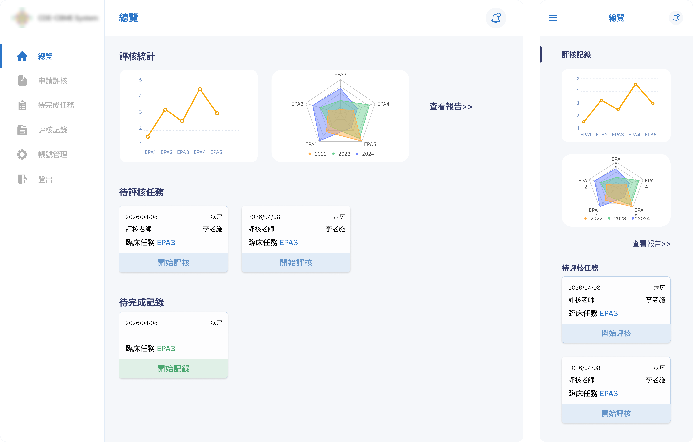
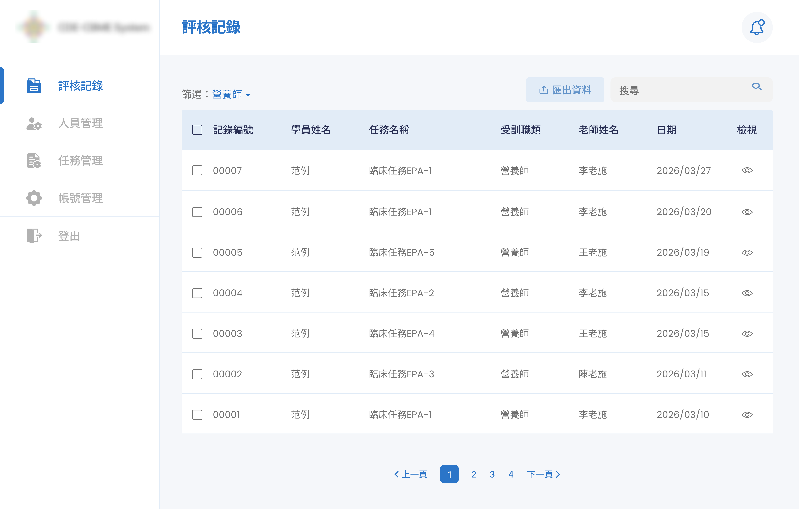

Challenge
Design a digital competency evaluation process that could work alongside existing paper-based training while fitting the realities of clinical practice.
HOSPITAL CLINICAL TRAINING · PRODUCT
Designing a digital evaluation experience while minimizing added work for users.
Design a digital competency evaluation process that could work alongside existing paper-based training while fitting the realities of clinical practice.
Defined an in-context evaluation workflow, simplified evaluator participation by removing separate system accounts, and designed learner and administrator experiences for the new system.
Examined the proposed evaluation process against clinical practice and identified assumptions that needed to be reconsidered.
Reframed evaluation scheduling, simplified evaluator participation, and deferred additional functionality to keep the initial workflow focused.
Designed the learner and administrator experiences around the revised evaluation workflow.
Planned usage logging with the engineer to monitor system usage and inform future product decisions.
The client is a hospital that provides training and certification programs for healthcare professionals, including physicians, pharmacists, nutritionists, and nurses. At the time, the training process was primarily paper-based.
The initial request was to digitize the training system, which included three user roles:
Completes training and evaluations.
Physicians who assess learners’ clinical performance.
Manages users, evaluation tasks, and records.
The workflow was designed around advance scheduling. Learners could request evaluation sessions with physicians through the system, and both parties could view their scheduled sessions on a calendar.
Learner requests an evaluation session
Evaluator arranges the evaluation time
Scheduled session appears on the calendar
As I worked with the client to understand the existing process, I learned that the new system would not replace any part of the paper-based training process. Instead, it would introduce an entirely new set of digital learning content and competency-based evaluations alongside the existing workflow. This meant users weren't just adopting a new tool. They were taking on additional work:
This changed how I approached the problem. It was no longer simply digitizing an existing process. The challenge became designing a new digital evaluation experience that could coexist with the paper-based training process while minimizing the additional effort required from users.
Before defining the product workflow, I first needed to understand how evaluations actually took place in the clinical environment. The initial proposal was to allow learners to schedule evaluations with physicians in advance. However, understanding how evaluations happened in practice revealed a mismatch between this approach and the clinical environment.
An evaluation depended on three conditions:
Since these conditions could come together spontaneously during an existing clinical workflow, evaluations often needed to happen in the moment rather than at a previously scheduled time.
A scheduling-based workflow could introduce unnecessary delays and make it harder to fit evaluations naturally into the clinical workflow. This led me to reconsider how the evaluation process should be organized around actual clinical practice.
Rather than scheduling evaluations in advance, I reframed the workflow around the clinical context. Learners could initiate an evaluation when a suitable clinical situation arose, allowing the process to fit more naturally into the practice.
With the evaluation process no longer dependent on advance scheduling, I also reconsidered whether physicians needed their own system accounts.
Physicians already had demanding clinical responsibilities. Requiring them to maintain separate login credentials and learn another system for an occasional task could introduce unnecessary friction and increase the risk of delayed or incomplete evaluations.
After discussing the workflow with the engineer, I proposed removing Evaluators from the formal system user model while retaining their role in completing assessments. Learners would initiate and manage the evaluation process, while physicians could complete assessments directly on the learner's device without needing a separate account or login.
The revised workflow allowed learners to initiate evaluations when needed, eliminating the need to request appointments and wait for confirmation. Together, these changes reduced unnecessary steps for both learners and physicians.
Clinical Situation Occurs
Learner Initiates Evaluation
Select Available Physician
Hands Over Device
Physician Completes Evaluation
With the core workflow and user roles defined, I translated the product requirements into learner-facing and administrator-facing experiences, working with the engineer to align the planned features with implementation needs.
The learner experience supported initiating formal evaluations for physicians to complete, self-recording and practice, tracking pending tasks, reviewing completed records, and viewing visual summaries of learning progress. The interface was designed separately for mobile and desktop to accommodate different working contexts.

The administrator experience supported managing users, evaluation tasks, and evaluation records, including searching, filtering, and exporting information.

While the initial scope focused on digital competency evaluations, I also considered how the system could eventually support the broader training process as more paper-based activities became digital. This consideration informed the product's feature structure while keeping the initial implementation focused on immediate needs.
I developed the Figma designs and reviewed the proposed experience with the client to gather feedback before implementation.
During the Figma prototype review, the client's feedback focused mainly on information presentation. One additional request was to give administrators a way to follow up on incomplete evaluations, based on past experience with delayed assessments.
After discussing the request with the engineer, we decided to defer the feature and first observe whether it was needed in practice. This would help keep the initial scope focused and avoid adding functionality for a situation that might not occur frequently.
Incomplete evaluations and any information already entered remained accessible on the learner's side, allowing learners to follow up when needed. Administrators could also add evaluation forms through the existing system when necessary. These existing options provided ways to address incomplete evaluations during the trial without introducing a separate follow-up feature.
With the core workflow defined and the additional feature deferred for validation during the trial, we moved forward with implementation.
Before delivery, I also worked with the engineer to instrument key interactions in the evaluation workflow, creating a basis for analyzing usage patterns and informing future product decisions.
The system was developed and delivered for a three-month trial, allowing us to observe how the workflow performed in practice and identify whether further adjustments were needed.
During the trial, no further requests were made for changes to the system's features or workflows. This also supported our initial decision to defer the follow-up functionality, keeping the workflow simple and leaving room to revisit the feature if actual use demonstrated a need for it.
Following the trial, the system moved into formal use. We continue to collect usage logs to monitor how the system is used, support ongoing maintenance, and inform future decisions about potential feature enhancements and workflow improvements.
Observe workflow in practice
No further change requests
Usage logs inform future improvements